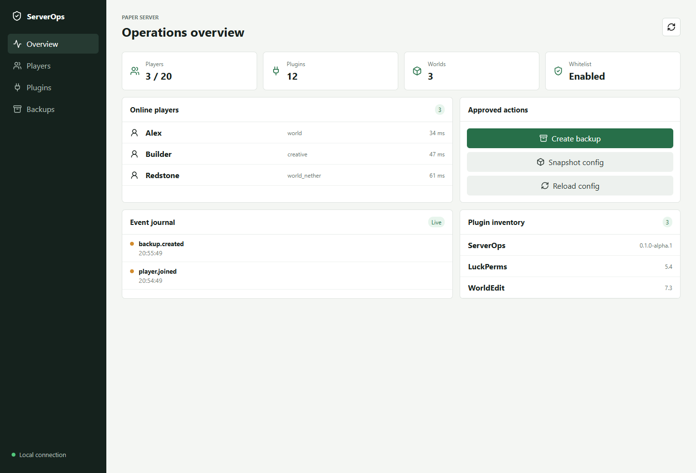

HTTP API
Status, players, plugins, event history, and action routes run on virtual threads.
Game server operations case study
A Java 21 Paper plugin with an embedded React panel for status, players, plugins, event history, backups, snapshots, and a deliberately small set of administrative actions.
01 / Experience
The dashboard prioritizes status, online players, approved actions, live events, and plugin inventory. It is bundled into the plugin JAR and served locally by the plugin.

02 / System
Status, players, plugins, event history, and action routes run on virtual threads.
A bounded journal broadcasts join, leave, backup, and configuration events over WebSocket.
State-changing Paper calls are scheduled onto the Bukkit server thread.
Gradle Wrapper, Java toolchain 21, shaded dependencies, and an embedded Vite build.
03 / Security
The listeners bind to 127.0.0.1, generate a 256-bit token, limit request bodies, and accept only whitelist, kick, backup, snapshot, and plugin config reload actions. There is no shell, file upload, arbitrary path, or console endpoint.
04 / Results
Explicitly allowed administrative actions.
Local transports: HTTP and WebSocket.
Fixed Java language level.
Passing security contract tests.
Status
Real Paper runtime testing remains the next validation layer before calling the plugin beta.